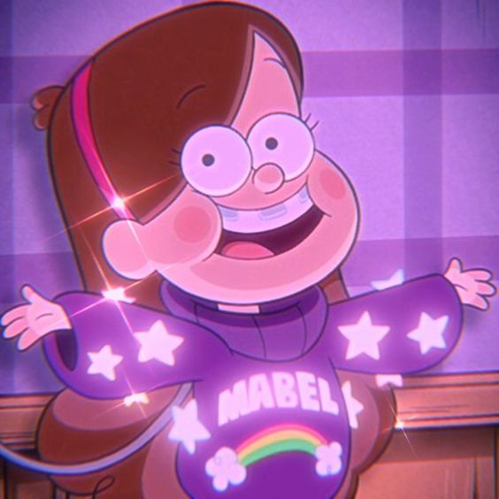

- Mabel pines
- Gravity Falls
Mabel Pines, the older twin by 5 minutes, is a 13-year-old girl spending the summer with her Great Uncle Stan in Gravity Falls, Oregon, where she and her brother frequently encounter the supernatural.
She is also the deuteragonist of the series. She takes a much less serious approach to life than her twin brother, as she navigates her way around odd, new surroundings.
Mabel is represented by the Shooting Star in the Zodiac.